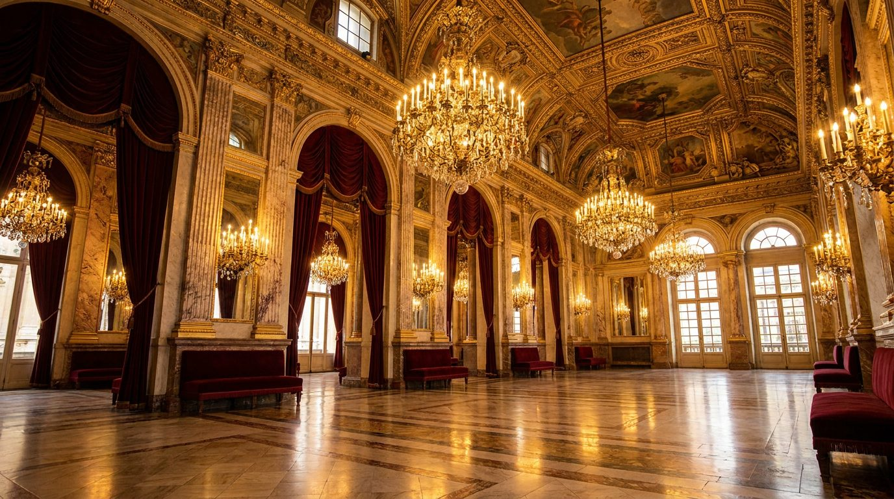

Atlante · FR-02 · Francia · Île-de-France
Salon Napoléon III dorato
Esempi · esterno e interno


Perché funziona
massima densità di dettaglio (staff, specchi, velluto): è la tipologia che vende il mobile come oggetto da collezione, ma è anche la più facile da far sembrare un albergo.
Architettura · elementi riproducibili
- Boiserie bianco/avorio con filettatura oro, specchi a tutta altezza tra le paraste
- Soffitto a cassettoni o cornice a mensole con stucchi e putti; altezza 3,5–4,5 m
- Lampadario a gocce di cristallo Ø 0,8–1,2 m ; applique a braccio
- Portiere in velluto, passamaneria, tende a teatro con mantovana
- Pavimento: parquet de Versailles o mosaico; tappeto Aubusson
Luce
controluce radente che accende le dorature, lampadario acceso come sorgente secondaria calda (2700 K) contro finestre a 5200 K; contrasto alto ma neri aperti.
Prompt di generazione (EN)
Formal Napoleon III Parisian salon, ivory boiserie with gold-leaf filigree, full-height mirrors between pilasters, crystal chandelier lit warm, deep burgundy velvet drapes, parquet de Versailles, black lacquer console, gilded stucco ceiling. Late afternoon daylight raking across the gilding from tall windows opposite camera, mixed 2700 K tungsten and 5200 K daylight, rich contrast with open shadows. 28 mm lens, f/5.6, camera at 1.5 m, symmetrical one-point composition, saturated colour, no people, 3:2.
Errori tipici da controllareoro giallo plastificato; specchi che riflettono ambienti incoerenti; sovraffollamento di oggetti; simmetria perfetta e innaturale in ogni inquadratura.
Riferimenti reali
- Grand foyer del Palais Garnier (1861–1875, Charles Garnier) apri ↗
- Musée Jacquemart-Andé
- Hôtel de la Païva